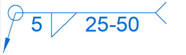
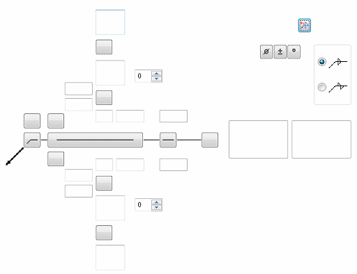
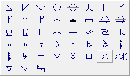
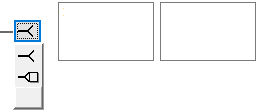
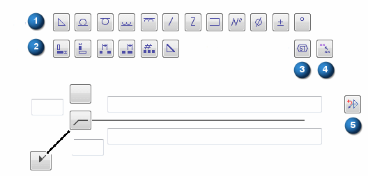
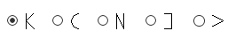
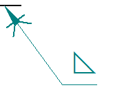

Label Weld Options dialog box
The user interface in this dialog box is determined by the active Weld Symbols standard. You set the active Weld Symbols standard on the Drawing Standards tab in the Solid Edge Options dialog box. The two standards which are available are ANSI/ISO/DIN or GOST.
- Saved Settings
-
Lists the saved settings. You can select the arrow to recall a previously saved setting. Saved settings are saved to the DraftWeld.txt file, located in the Solid Edge/Program/Templates/Reports folder.
- Save
-
Saves the current weld symbol parameters to a name you define. You can recall the saved setting to place it more quickly later.
- Delete
-
Deletes the selected saved setting.
- Cross
-
Specifies the cross section area for the weld label.
This value, and the length of the labeled edge, are used to compute the theoretical volume of the weld bead.
- Preview
-
As you define a weld symbol, the Preview pane shows how it will appear when placed on the model.
Example:
ANSI/ISO/DIN weld symbol properties
To learn how to build a simple weld symbol, see Example: Define a weld symbol.

- Field/Site Symbol
-
Specifies a flag points right symbol, a flag points left symbol, or none.
- All Around Symbol
-
Specifies the all around symbol or none.
- Weld Symbol
-
When selected, displays a list of weld type symbols. After selecting the type of weld symbol from the Weld Symbol list, you can use the other weld symbol definition options to define the content and layout of the weld symbol.

- Identification Line Symbol
-
Specifies an identification line above, identification line below, or none.
- Intermittent Symbol
-
Specifies the intermittent symbol or none.
- Tail Symbol
-
Specifies an open tail, a closed tail, or no tail. Use the Tail Note 1 and Tail Note 2 boxes to define the content.

- Number of
-
For ANSI/ISO/DIN weld symbols, assigns a weld number operation to the current set of weld options.
- Add New Operation
-
For ANSI/ISO/DIN weld symbols, clears all boxes and increments the operation number.
- Operation
-
For ANSI/ISO/DIN weld symbols, selects and restores the weld options associated with a specific operation number.
- Delete Current Operation
-
For ANSI/ISO/DIN weld symbols, clears all boxes and resets the operation to the previous number.
- Reset Current Operation
-
For ANSI/ISO/DIN weld symbols, clears all boxes but does not change the operation number.
GOST weld symbol properties
The GOST weld symbol has four string input boxes. These input boxes may contain a combination of text and %XX property text codes.
After placing the cursor in a weld symbol input box, you can select the Symbols buttons, Values buttons, or open the Symbols and Values dialog box to insert the appropriate property text codes. The property text codes convert to weld symbols and weld data when the symbol is placed in the document.

- Symbols
-
The Symbols buttons (A) specify the weld symbol type, as well as insert frequently used symbols such as number, diameter, plus-minus, and degree.
- Values
-
The Values buttons (B) extract weld data, such as base thickness, bead length, number of weld beads, and pitch.
- Symbols and Values
-
Opens the Select Symbols and Values dialog box for you to select other symbols and model-derived values without having to type the property text codes yourself.
- Field/Site Symbol
-
Specifies a flag points right symbol, a flag points left symbol, or none.
- All Around Symbol
-
Specifies the all around symbol or none.
- Terminator Symbol
-
Specifies the same side symbol, the other side symbol, or a full arrow head.
- Reset
-
Clears all of the text from the weld symbol boxes, and resets the lines and arrows to the default selection.
- Permanent joint
-
Specifies how two materials are joined together. You can select the Permanent joint check box, and then select the type of permanent joint.
Example:

How do I
Construct a fillet weldConstruct a stitch weld
Construct a groove weld
Label a weld
Insert a weldment in an Assembly
Create a Weldment Assembly
Learn more
WeldmentsCreating drawings of weldment assemblies
Look up more details
Fillet Weld commandFillet Weld command bar
Fillet Weld Options dialog box
Groove Weld command
Groove Weld command bar
Groove Weld Options dialog box
Label Weld command
Label Weld command bar
Stitch Weld command
Stitch Weld command bar
Stitch Weld Options Dialog Box
Insert Weldment command
Insert Weldment command bar
Weldment Parameters dialog box
Weldment Assembly command
Weldment Assembly Dialog Box
Weldment File Type dialog box